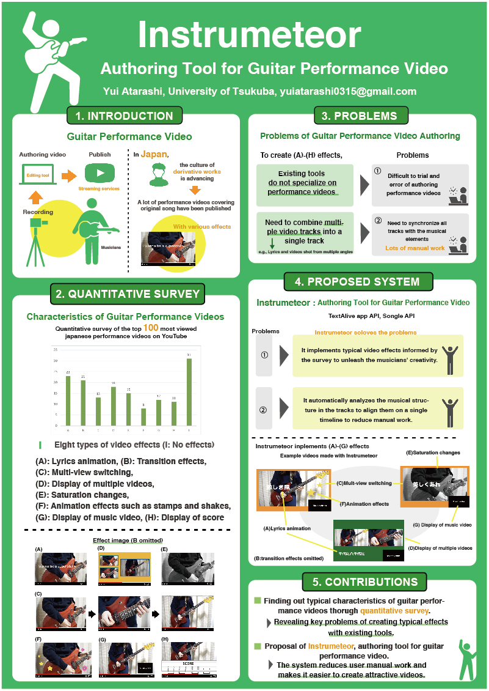

大学3年次の秋より，ギター演奏動画の制作支援アプリInstrumeteorの開発を行っています． Instrumeteorは音楽的要素に合わせて視点切り替えや歌詞表示等のエフェクトを自動で生成し，演奏動画を出力してくれるWEBアプリケーションです．
担当
提案・開発・論文執筆
概要
楽器演奏者は自身の演奏を視聴してもらうためにSNSや動画共有サイトにて演奏動画を投稿しています． 本プロジェクトでは，ギターに焦点を当て，ギター演奏動画における定量調査を行い，既存の演奏動画に用いられる 複数の演出上の工夫を特定しました．次に, 従来の制作過程にあった定型的な手作業の労力 を削減し，調査の結果判明した典型的な加工を自動で生成するアプリケーションInstrumeteorを開発することにより，誰もが簡単に魅力的な演奏動画を制作することを目指しています．
外部資料
ヒューマンコンピュータインタラクション分野の国際会議であるCHI2021内の学生研究コンペティションにて採択され，発表を行いました． ACM DL
ヒューマンコンピュータインタラクション分野の国内会議であるWISS2021にて主著の論文の発表を行いました． 日本語論文（査読なし）